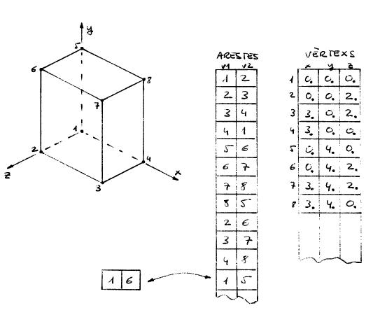

El primer esquema de representació que ens podem imaginar per a emmagatzemar la geometria dels objectes d'una escena 3D és l'anomenada representació per filferros. Aquesta representació guarda els vèrtexs i les arestes dels objectes. Una possibilitat és disposar d'una taula d'arestes i d'una taula de vèrtexs. Per cada un dels vèrtexs de la taula de vèrtexs guardem les seves coordenades (x,y,z), mentre que per cada aresta de la taula d'arestes guardem l'índex -a la taula de vèrtexs- de cada un dels seus vèrtexs extrems.
A la següent figura podeu veure l'exemple senzill d'un cub amb la seva representació per filferros:
|  |
També podem veure alguns exemples d'aquesta representació i els seus inconvenients: